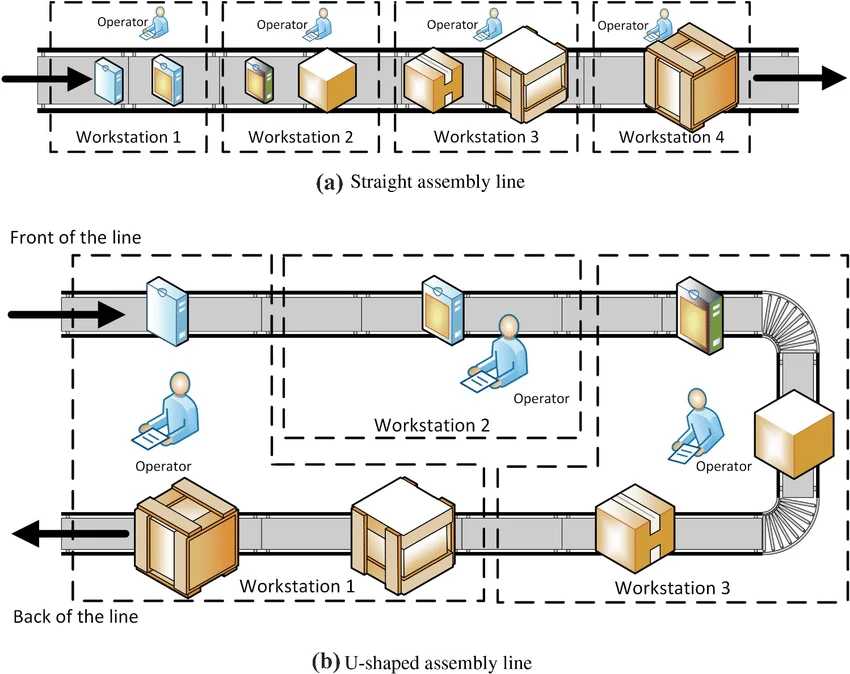
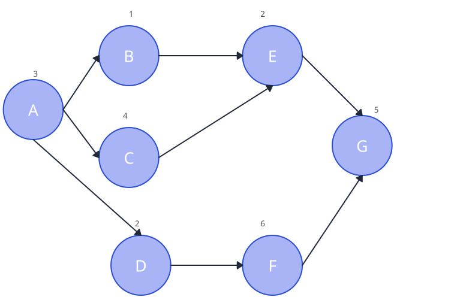
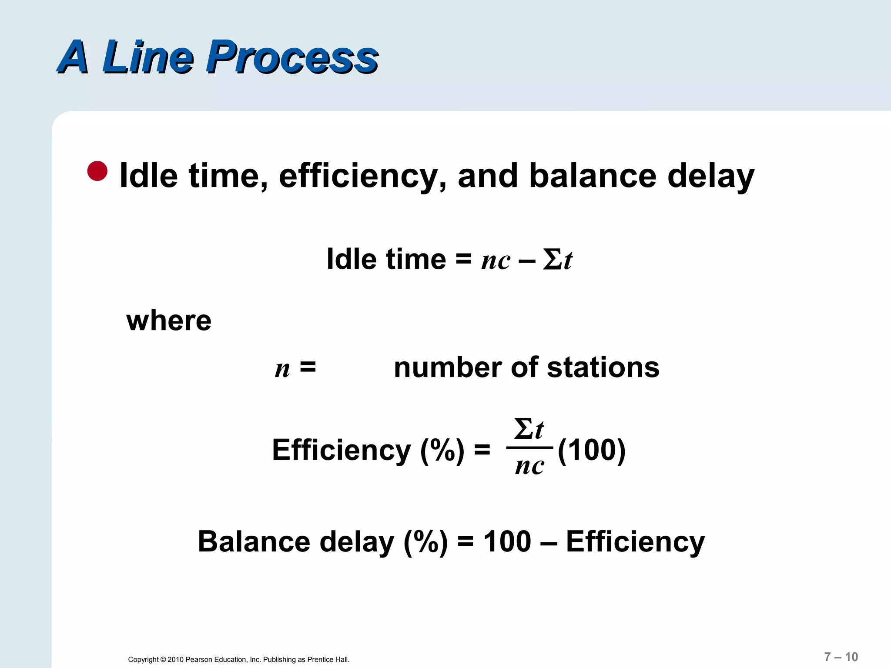

Line Balancing = Distributing work among stations to minimize idle time
Problem: Given task times and precedence constraints
Assign tasks to minimum number of workstations
Goal: Maximize efficiency (minimize idle time and workstation count)
while maintaining precedence relationships
1.2 Key Definitions (Most-Tested Terms)
Cycle Time (C):
= Max time station spends on one unit before passing to next station
= Determined by bottleneck station (slowest station)
= Rate-determining factor for production output
Workstation (W):
= Single location where one or more tasks are performed
= Connected in series; units flow through in sequence
Task:
= Indivisible unit of work (cannot split between stations)
= Has precedence constraints (must follow certain tasks)
= Has standard time (in minutes/seconds)
Precedence Constraint:
= Task A must be completed before Task B can start
= Defines technological/logical order of work

Figure 1.1: Sequential Assembly Line Workstation Allocation & Cycle Time Flow.
1.3 Line Efficiency Metrics (Critical for Exams)
Line Efficiency (E):
= Ratio of total productive time to available time
= Shows how well we use station capacity
Balance Delay (D):
= Opposite of efficiency: idle time in system
= Time wasted due to unequal work distribution
Ideal case: E = 100%, D = 0%
Practical case: E = 80–95%, D = 5–20%
1.4 Cycle Time Constraint
Cycle Time must satisfy:
C ≥ max(t_i) for all tasks i
(Cannot be less than longest individual task)
Production Rate:
= 60 / C units per minute (if C in minutes)
= 3600 / C units per hour (if C in seconds)
Longer C → Lower production rate (fewer units per hour)
1.5 Workstation Count Constraint
Theoretical minimum workstations:
N_min = ceil( Σt_i / C )
Where:
Σt_i = Sum of all task times (total work content)
C = Cycle time
ceil() = Round up to next integer
Actual number of stations ≥ N_min (can be higher if precedence constraints are tight)
1.6 Precedence Diagram
Visual representation of task dependencies
Nodes = Tasks (labeled with task time)
Edges = Precedence relationships (arrow points to dependent task)
Example: Task A→B means A must finish before B starts
Task A→B and A→C means A must finish before both B and C start

Figure 1.2: Precedence Network Graph — Work Elements (Nodes with $t_i$) & Directed Dependency Constraints.
$\lceil \rceil$ = Ceiling function (round up to next whole integer).
2.4 Production Rate & Cycle Time
$$\text{Production Rate (R)} = \frac{\text{Available Time (T)}}{C} \qquad \iff \qquad C = \frac{\text{Available Time (T)}}{\text{Desired Output (D)}}$$
2.5 Idle Time per Station & Smoothness Index
Station Idle Time:
$$I_j = C - T_{sj} \quad (\text{where } T_{sj} = \text{sum of task times at station } j)$$
Total Line Idle Time:
$$\sum I_j = N \times C - \sum t_i$$
Smoothness Index (SI):
$$\text{SI} = \sqrt{\sum_{j=1}^{N} (C - T_{sj})^2}$$
Lower Smoothness Index $\text{SI}$ represents more uniform workload distribution across workstations.

Figure 1.3: Workstation Workloads vs Cycle Time ($C$) — Bottleneck Station & Balance Delay Idle Blocks.
3. Line Balancing Methods & Heuristics
3.1 Heuristic Methods Comparison
Method
Approach
Best For
Exam Note
Largest Candidate Rule (LCR)
Assign tasks in descending order of task time; assign to earliest available station that respects precedence
Simple manual balancing; quick approximation
Often tested heuristic; produces reasonable solution quickly
Ranked Positional Weight (RPW)
Calculate positional weight (task time + all following task times); assign by descending weight
Better than LCR; accounts for downstream impact
Slightly more complex; better solution quality
Greedy Algorithm
Assign tasks to earliest available station without exceeding cycle time
Computer-based optimization
Guarantees feasible solution; often optimal for small problems
Integer Linear Programming (ILP)
Formulate as optimization problem with binary variables for task-station assignment
Optimal solution for complex problems
Theoretical approach; not typically solved manually in exams
Trial-and-Error
Manually balance given small problem size and constraints
Small exam problems (5–10 tasks)
Practical for competitive exams; requires systematic approach
Balance delay $d = 100\% - \eta$; represents idle time as fraction of available time. Lower is better.
Production rate $R = 60/C$ (if $C$ in minutes) = $3600/C$ (if $C$ in seconds). Longer cycle time reduces output rate.
Precedence constraints limit task assignment; cannot assign task B to station until all predecessors are in earlier/same stations.
Idle time per station = Cycle time - (sum of task times at that station). Unequal work distribution causes idle time.
Largest Candidate Rule (LCR) = Assign tasks in descending time order. Simple heuristic; produces reasonable solutions.
Ranked Positional Weight (RPW) = Calculate position weight (task + all downstream tasks); assign by descending weight. Better quality than LCR.
Greedy algorithm assigns each task to earliest available station without exceeding cycle time. Guarantees feasible; often optimal for small problems.
Perfect balance (100% efficiency) rarely achieved in practice due to precedence constraints and discrete task times. 80–95% efficiency is typical and acceptable.
Smoothness Index measures workload evenness across stations; lower SI indicates more balanced line.
To increase production rate: reduce cycle time, but must check if precedence allows task re-distribution. May require more stations.
To reduce number of stations: increase cycle time slightly. Trade-off between efficiency and flexibility.
Precedence diagram is essential input to balancing problem; must identify all direct and transitive dependencies before assigning tasks.
Revision Focus Areas (Frequency-Ranked):
1. Cycle time definition & bottleneck | 2. Line efficiency formula ($\eta$) | 3. Minimum stations ($N_{\min}$) | 4. Balance delay & Smoothness Index | 5. Precedence constraints & RPW/LCR heuristics